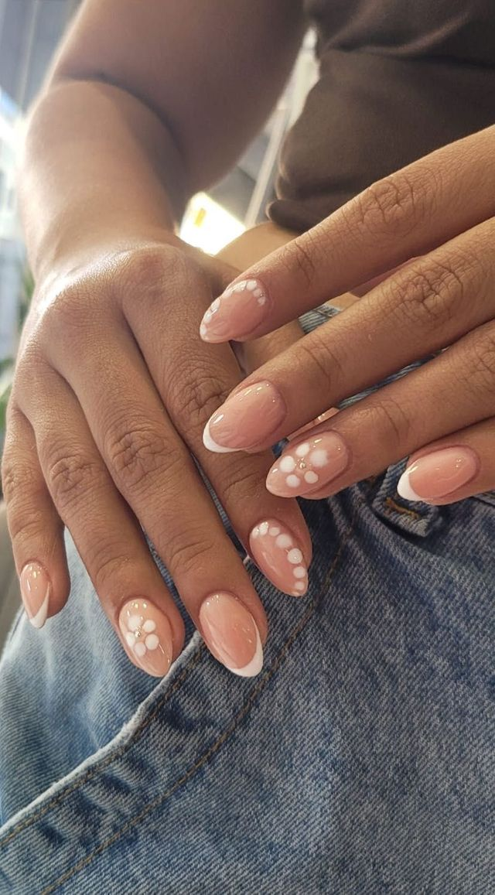
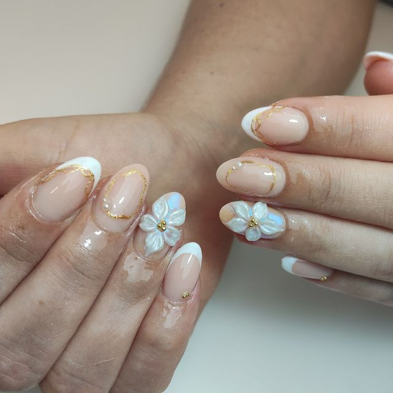
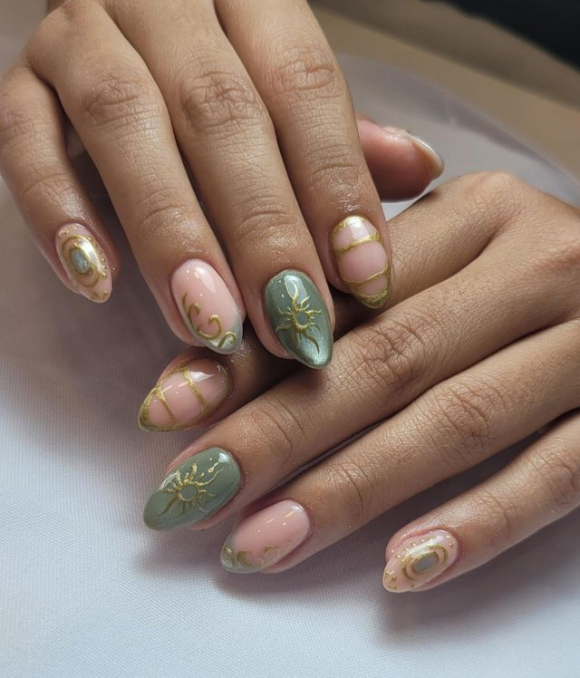
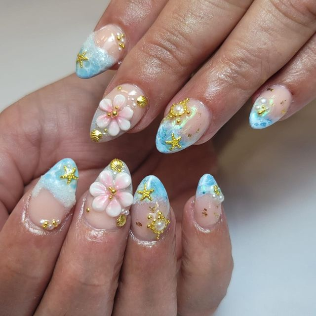

Diseños
Cada uña, un diseño pensado
Desde una francesa clásica hasta piezas muy elaboradas con línea fina, pedrería o flores en 3D. Esta es una selección verificada de nuestro portfolio real en Booksy.
Nuestro estilo
Cuatro maneras de trabajar el detalle
Así es como distinguimos las técnicas que más vemos repetirse en nuestro propio trabajo, para que sepas qué pedir cuando reserves.

Francesa & baby boomer
El clásico, siempre actual
La base de gran parte de nuestro trabajo: un borde blanco fino o un degradado suave entre nude y blanco (baby boomer), que deja las manos limpias y luminosas. Es también el punto de partida habitual para añadir flores, líneas o pedrería puntual.

Floral en 3D
Flores esculpidas a mano
Pétalo a pétalo, con volumen real sobre la uña. Es uno de los acabados más pedidos para ocasiones especiales y el que más tiempo de trabajo detallista requiere — se nota en el resultado.

Línea dorada
Trazo fino, mucho carácter
Líneas doradas finas —geométricas, florales o como contorno de una francesa de color— son la firma más artística de nuestro portfolio. Requieren pulso firme y son ideales para quien busca algo distinto sin renunciar a la elegancia.

Color & diseño
Sin límite cuando el diseño lo pide
Animal print, temáticas de temporada, pedrería multicolor o piezas "muy elaboradas" con varias técnicas combinadas. Si tienes una idea concreta, este es el terreno donde más se nota la experiencia del equipo.
Portfolio
Trabajos reales del estudio
Selección de nuestro portfolio en Booksy. Toca cualquier foto para verla ampliada.
Puedes ver el álbum completo y más de 600 fotos de trabajos reales en nuestro perfil de Booksy.
Ver precios y reservar